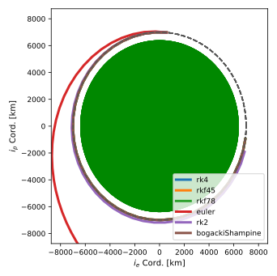

scenarioIntegrators
Overview
This script illustrates how to setup different integration methods for a basic 3-DOF orbit scenario.
The script is found in the folder basilisk/examples and executed by using:
python3 scenarioIntegrators.py
The simulation layout is shown in the following illustration. A single simulation process is created which contains the spacecraft object. Gravity effectors are attached to the spacecraft dynamics to simulate the gravitational accelerations. The spacecraft object provides the states that the integration module needs to perform the time integration.

If Module: spacecraft, or any other dynamics module, is created without specifying a particular integration type, the fixed time step 4th order Runge-Kutta method is used by default. To invoke a different integration scheme, the following code is used before the dynamics module is added to the python task list:
integratorObject = svIntegrators.svIntegratorEuler(scObject)
scObject.setIntegrator(integratorObject)
The first line invokes an instance of the desired state vector integration module, and provides
the dynamics module (spacecraft() in this case) as the input. This specifies to the integrator
module which other module will provide the equationOfMotion() function to evaluate the derivatives of
the state vector. The second line ties the integration module to the dynamics module. After that we are
done.
The integrator scenario script is setup to evaluate the default integration method (RK4), a fourth-order variable time step integrator (RKF45), a first order Euler integration method, as well as a second order RK2 method.
Moreover, this scenario illustrates how to set-up your own explicit Runge-Kutta methods simply by providing the coefficients in their Butcher table. The 3rd order Runge-Kutta and the (adaptive) Bogacki-Shampine methods are implemented in this way to illustrate how to create custom integrators:
# 3rd order Runge-Kutta method
integratorObject = svIntegrators.svIntegratorRungeKutta(
scObject,
a_coefficients=[
[0, 0, 0],
[1/2, 0, 0],
[-1, 2, 0]
],
b_coefficients=[1/6, 2/3, 1/6],
c_coefficients=[0, 0.5, 1]
)
scObject.setIntegrator(integratorObject)
# Bogacki-Shampine method
integratorObject = svIntegrators.svIntegratorAdaptiveRungeKutta(
scObject,
largest_order=3,
a_coefficients=[
[0, 0, 0, 0],
[1/2, 0, 0, 0],
[0 , 3/4, 0, 0],
[2/9, 1/3, 4/9, 0]
],
b_coefficients=[7/24, 1/4, 1/3, 1/8],
b_star_coefficients=[2/9, 1/3, 4/9, 0],
c_coefficients=[0, 1/2, 3/4, 1]
)
scObject.setIntegrator(integratorObject)
When the simulation completes a plot is shown for illustrating both the true and the numerically evaluated orbit.
Illustration of Simulation Results
show_plots = True, integratorCase = {'rk4', 'rkf45', 'rk2', 'euler'}
The following figure illustrates the resulting trajectories relative to the true trajectory using a very coarse integration time step of 120 seconds. The RK4 and RKF45 method still approximate the true orbit well, while the RK2 method is starting to show some visible errors. The first order Euler method provides a horrible estimate of the resulting trajectory, illustrating that much smaller time steps must be used with this method in this scenario.
Creating New Integrator Modules
New integration modules can be readily created for Basilisk. They are all stored in the folder
Basilisk/src/simulation/dynamics/Integrators/.
The integrators must be created to function on a general state vector and be independent of the particular
dynamics being integrated. Note that the default integrator is placed inside the _GeneralModulesFiles
folder within the dynamics folder.
- scenarioIntegrators.run(show_plots, integratorCase)[source]
The scenarios can be run with the followings setups parameters:
- Parameters:
show_plots (bool) – Determines if the script should display plots
integratorCase (bool) –
Specify what type of integrator to use in the simulation
String
Definition
’rk4’
RK4 - default
’rkf45’
RKF45
’rkf78’
RKF78
’rk2’
RK2
’euler’
Euler or RK1
’rk3’
RK3
’bogackiShampine’
Bogacki-Shampine adaptive